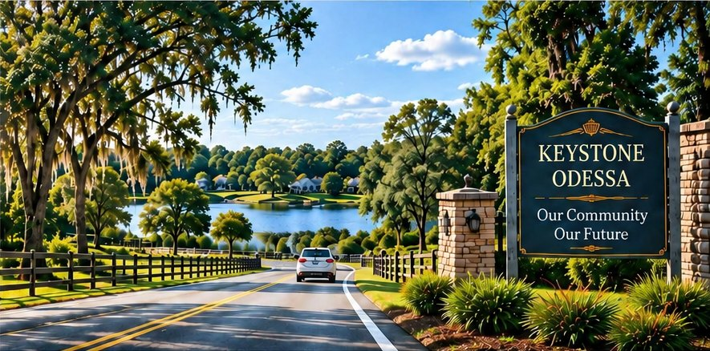
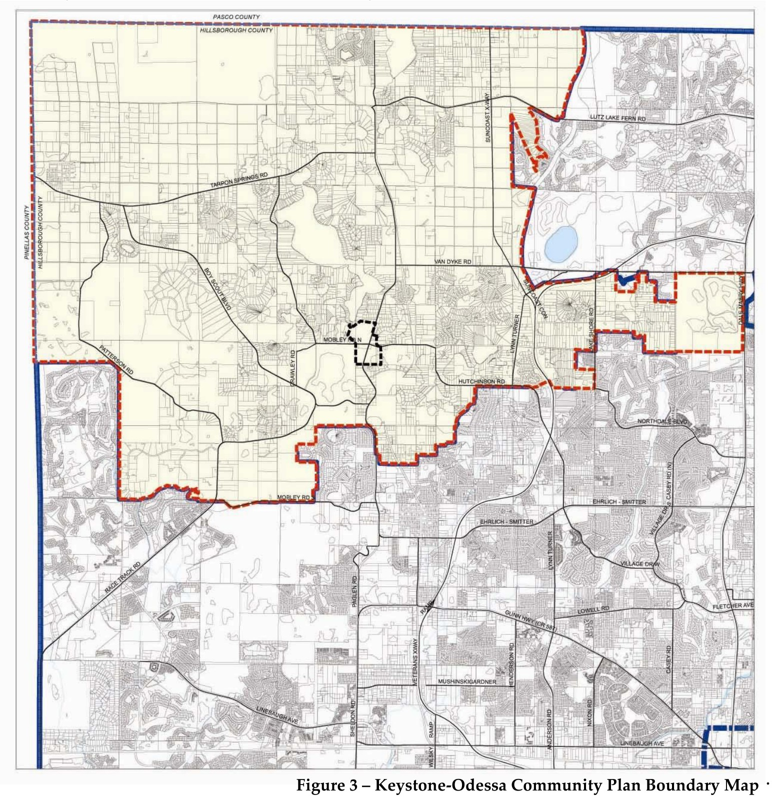
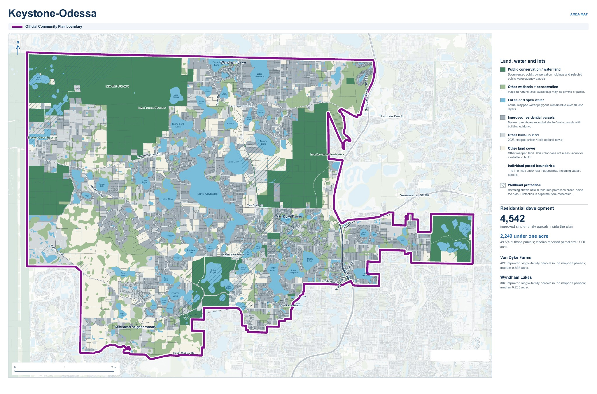
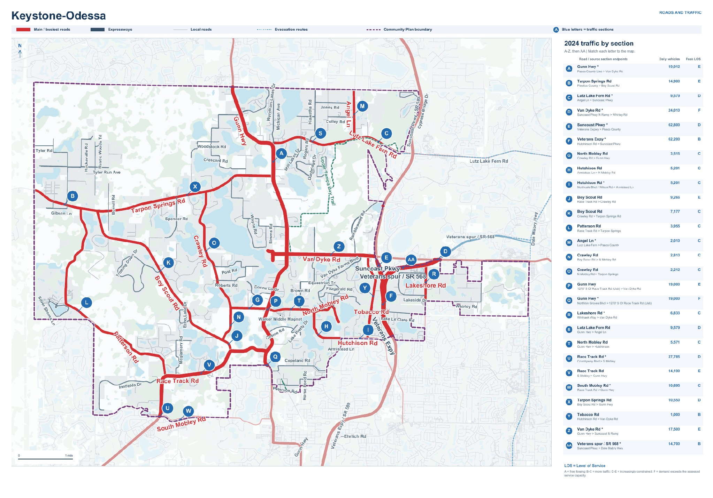
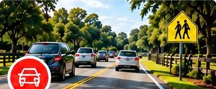
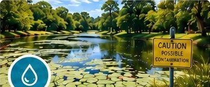
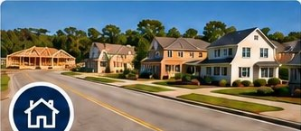

Protect nature. Protect people.
Conservation lands, lakes and water-resource protections already exist here.
A safer, stronger Keystone–Odessa
We envision a future where community growth protects people and places—supported by responsible planning, safer infrastructure, environmental stewardship, and decisions that reflect the needs of today’s residents and generations to come.
The Keystone–Odessa community’s health, safety and welfare is endangered due to its outdated community plan.

Source: Keystone–Odessa Community Plan

The land. The neighborhoods. The traffic.
Added detail: land protections, parcel sizes and traffic volumes.

Existing homes, divided lots and major roads are part of Keystone–Odessa today. The map shows an established residential community alongside its natural landscape.
Over one-third of the Keystone–Odessa Community Plan area is mapped conservation land, lakes, reservoirs or ponds.
Public conservation lands and lakes are part of what makes this area special. Separate ownership and environmental protections also matter; removing the Community Plan would not automatically remove them.
GIS measurement, 16 October 2026: 34.3% (8,025 of 23,387 acres); conservation land and mapped lakes/reservoirs/ponds clipped to the adopted Plan boundary, with overlaps counted once. Sources: Plan Hillsborough; FNAI (September 2026); acquired ELAPP; SWFWMD (2023).
Protect the landscape. Question the plan.
Conservation lands, lakes and water-resource protections already exist here.
Our parcel analysis identified 4,542 improved single-family parcels. Nearly half were smaller than one acre. Infrastructure decisions must reflect the community already here.
SCU analysis of the October 2, 2026 County GIS snapshot: 2,249 of 4,542 selected improved single-family parcels had reported acreage below one acre (49.5%). Parcels are not a count of occupied homes. Public holdings, wetlands and water-protection layers describe different protections; they are not all government-owned land.
Method: unique tax folios assigned to the official boundary by an interior point; single-family classification, positive building value and at least one recorded building; full reported parcel acreage. The October 2 snapshot is dated, not a live count.
Parcel source and calculation inputs — County parcel GIS
Official Community Plan boundary — County GIS

One Gunn Highway section carries nearly 20,000 vehicle movements a day. People living here and traveling through deserve better options.
2024 annual-average daily traffic: 19,912 on Gunn Highway, Pasco County line to Van Dyke Road. This measures vehicle movements, not unique people or injuries. SCU map compiled from County road and traffic data. Read the County’s 2024 traffic data
Continue to Roads & Safety: see why the Van Dyke study excluded Gunn Highway to west of Suncoast Parkway from capacity-improvement analysis because of Comprehensive Plan constraints.
Click on each issue below to learn more about how these problems impact our community and why change is needed.

Our roads are dangerous! Traffic, intersections, lighting, road safety and emergency access put residents, students and commuters at risk. View Roads & Safety →
Our water is at risk! 1,626 known septic systems, 1,210 likely septic, and 806 repair records. Septic systems and wells threaten groundwater, drinking water, health and the environment. View Water & Septic →
Everyday needs are harder to access! Housing, commute time, healthcare, food, jobs and essential services are limited due to current restrictions. View Growth & Daily Life → The Community Plan is holding our community back! Outdated rules adopted in 2001 continue to limit solutions for our roads, water, infrastructure, housing, and essential services. View the Community Plan →